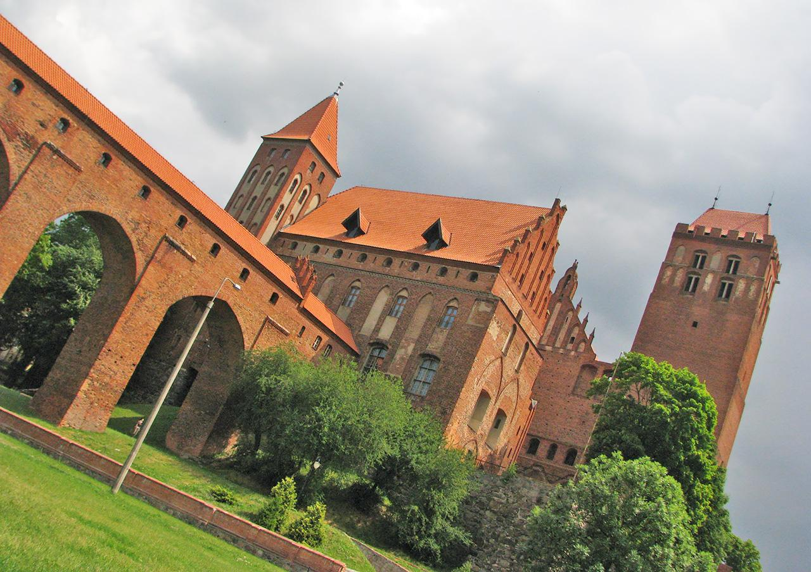
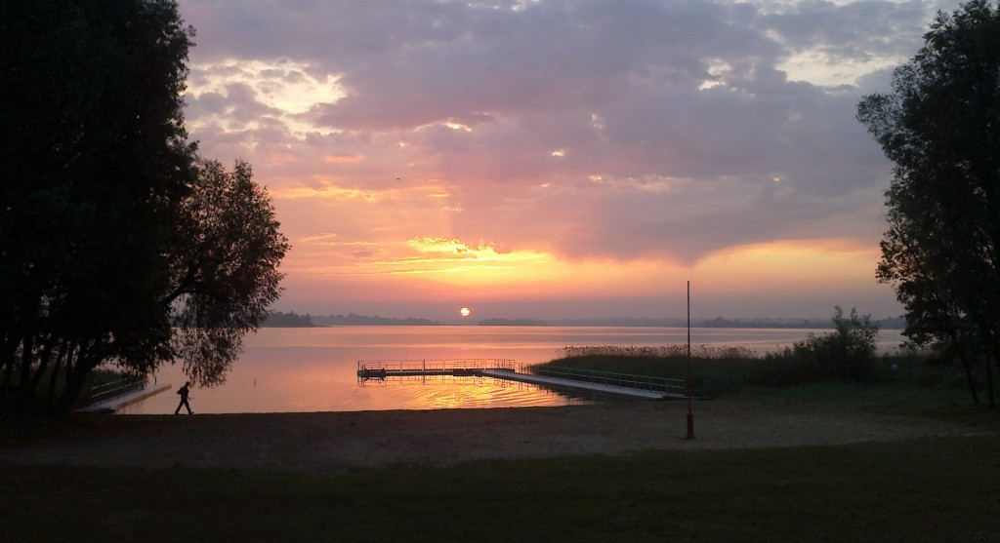
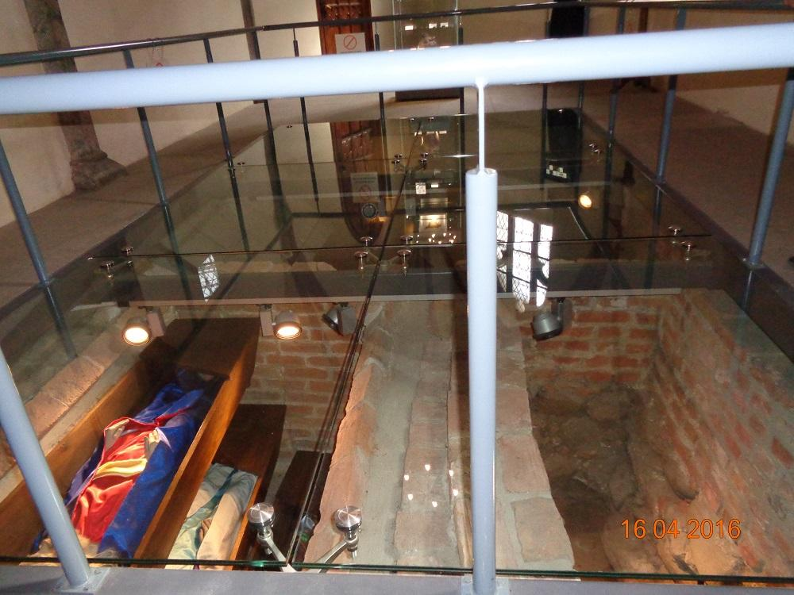

Dane o powiecie
| Siedziba | Kwidzyn |
| Powierzchnia | 835 km² |
| Populacja | 83 457 |
Dane kontaktowe starostwa powiatowego
| Telefon | +48 55 646 50 00 |
| Adres | ul. Kościuszki 29b 82-500 Kwidzyn |
| Strona | powiatkwidzynski.pl |
Atrakcje turystyczne
Zamek w Kwidzynie
W centrum Kwidzyna zachował się wspaniały zespół katedralno-zamkowy - niezwykle cenny stojący tu od XIV wieku. Zamek Kapituły Pomezańskiej wzorowany na zamkach krzyżackich zbudowano w latach 1320-40. Pierwotnie był czteroskrzydłowy, na rzucie zbliżonym do kwadratu. Ze względu na swą unikalniość niezwykle cenna jest tu wieża sanitarno - higieniczna tzw. Gdanisko z 1393 roku.
Źródło: polskieszlaki.plJezioro Dzierzgoń
 Zdjęcie ze strony globtroter.plJezioro Dzierzgoń leży na północny wschód od Kwidzyna, w Prabutach, w granicach obszaru chronionego.
Na tym dużym zbiorniku znajdują się aż 4 wyspy, a wydzielone kąpielisko strzeżone jest przez ratownika. Ponadto można tu wypożyczyć sprzęt wodny lub wypocząć na plaży. Przez jezioro Dzierzgoń prowadzi malowniczy szlak kajakowy po rzece Liwie.
Źródło: polskieszlaki.plKrypta Mistrzów Zakonnych w Kwidzynie
W zamkowej katedrze Św. Jana Ewangelisty w Kwidzynie można oglądać zachowane groby trzech Wielkich Mistrzów Zakonnych:
- Wernera von Orseln (1330 rok)
- Ludolfa Königa (1348 rok)
- Henryka von Plauen (1429 rok)
Prawdopodobnie zostali tu, a nie w Malborku pochowani z uwagi na swoją niepopularność w zakonnych kręgach spowodowaną np. wyjątkową brutalnością czy chorobą psychiczną.
Źródło: polskieszlaki.pl